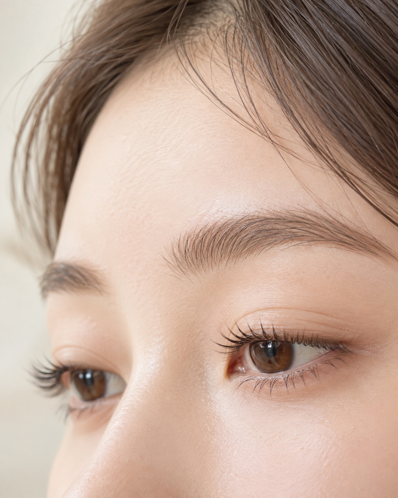
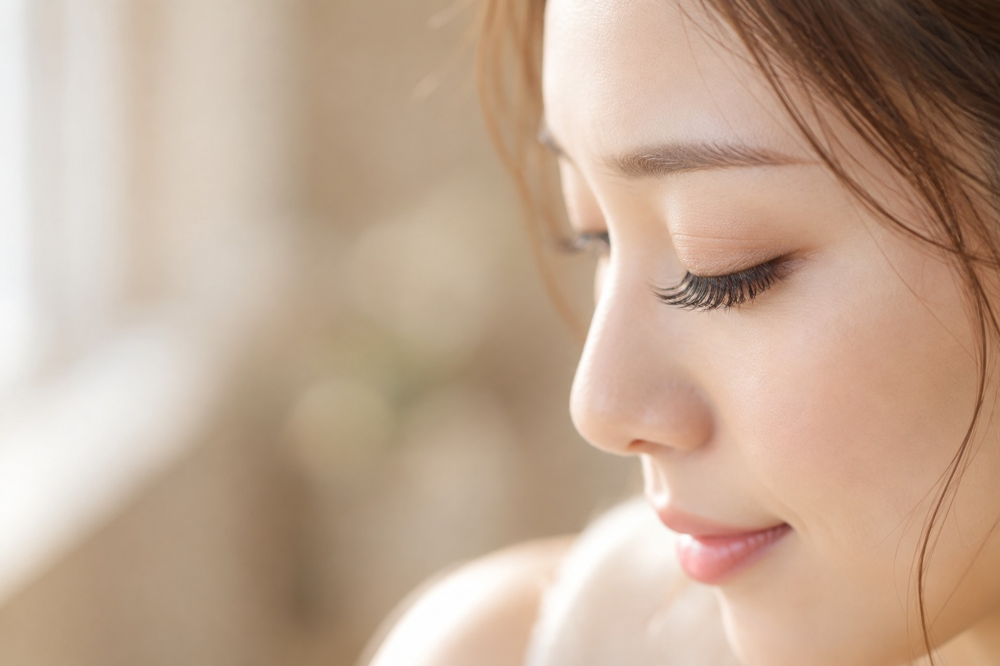
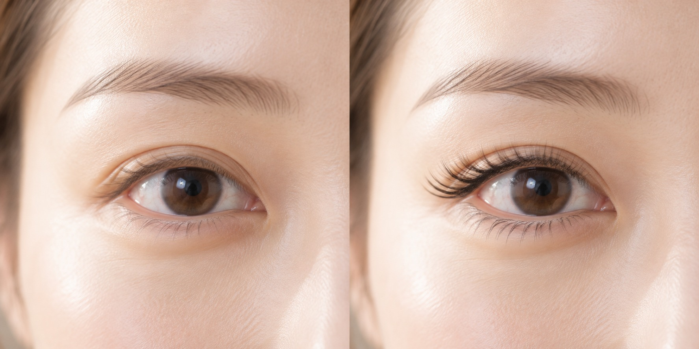

Staff & Gallery
スタッフとサロンの様子

Brow designer
早川 れい
メイクアップアーティストをへて、眉の専門家に。「眉ひとつで、毎朝が少し楽しくなる」お手伝いをしています。



Arc. が大切にしていること
目と眉の距離、骨の位置を見ながら、その方に合う形をご提案します。
施術のあとに、ご自宅での描き方をお伝えします。毎朝のメイクが楽になるように。
肌の状態を確かめてから、必要な部分だけ。不安なことは何でもご相談ください。

BeforeAfterアイブロウスタイリング＋ラミネーション（60分）
※仕上がりには個人差があります。写真はイメージです。
スタッフとサロンの様子
メイクアップアーティストをへて、眉の専門家に。「眉ひとつで、毎朝が少し楽しくなる」お手伝いをしています。

